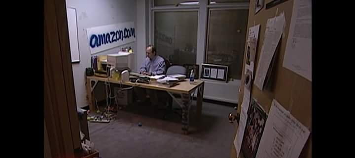
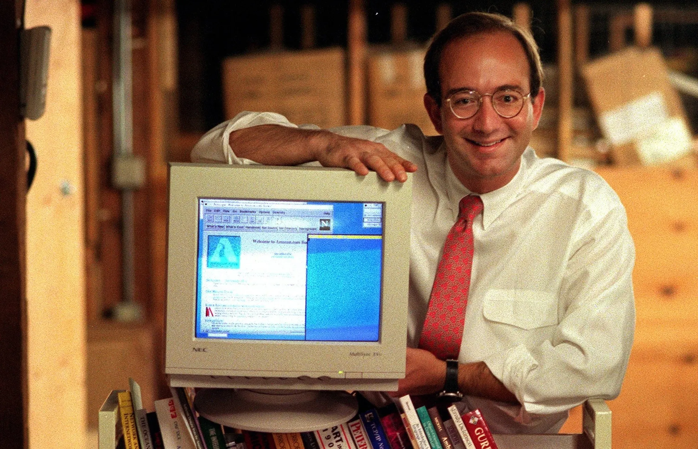
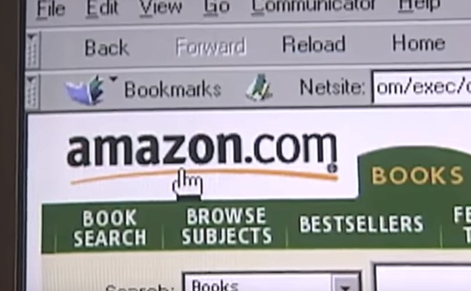

Introduction

In the mid-1990s, the sound of dial-up and the simplicity of early websites set the tone for a digital revolution. Amazon launched in 1995 calling itself “Earth’s biggest bookstore,” changing how people discovered and purchased books.
Amazon as "Earth's Biggest Bookstore"

Amazon began as an online bookstore engineered around scale: millions of titles, low prices, and database-driven recommendations. This made Amazon feel futuristic compared to traditional stores.
Bookstore Wars: Chains, Indies, and Online Threats

Independent bookstores were already struggling against Barnes & Noble and Borders when Amazon arrived. By the late 1990s, nearly half had closed. Yet in the 2010s, a resurgence began centered on “community, curation, and convening.”
Amazon vs eBay: Two Visions of Online Shopping

Amazon and eBay represented two very different internet futures. Amazon centralized control. eBay embraced user-to-user capitalism. But P2P was still a problem.
Where Amazon controlled logistics and experience, eBay depended on user trust. The early 2000s showed these competing templates shaping online shopping differently.
You’ve Got Mail and the Feelings Around Disruption
The 1998 film You’ve Got Mail reflects anxieties about chain stores, digital communication, and the emotional cost of a shifting retail landscape.
Conclusion
Amazon’s rise redefined retail, challenged bookstores, and reshaped shopping. eBay offered an alternative model, while You’ve Got Mail captured the cultural tension behind these changes.
Works Cited (MLA Style)
- Krishnamurthy, Sandeep. “A Comparative Analysis of eBay and Amazon.” 2004.
- Raffaelli, Ryan. “Reinventing Retail: Independent Bookstores.” 2020.
- Wired Magazine Articles, 1997–1998.
- Rutigliano, Olivia. “Was You’ve Got Mail Trying to Warn Us?” 2022.
- You’ve Got Mail, 1998.